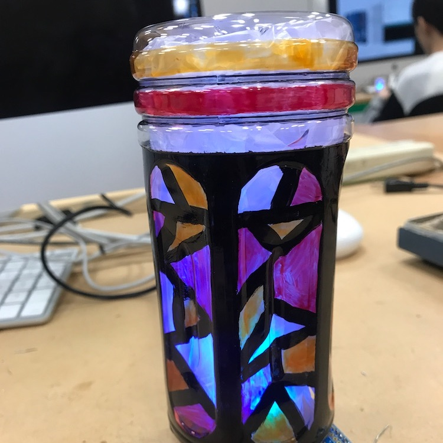
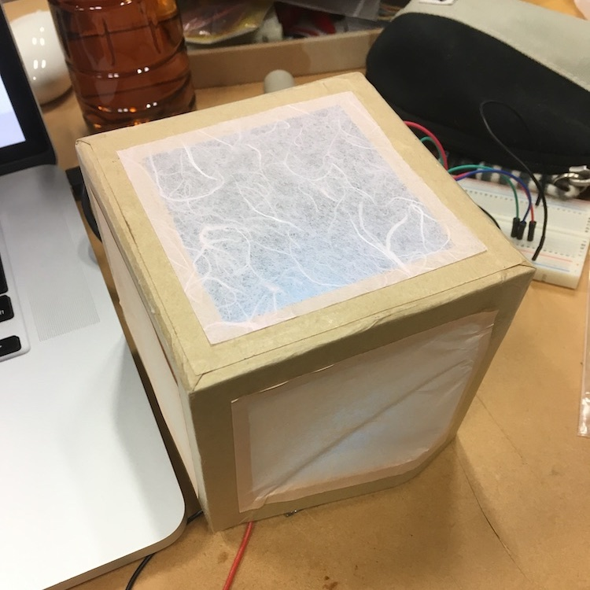
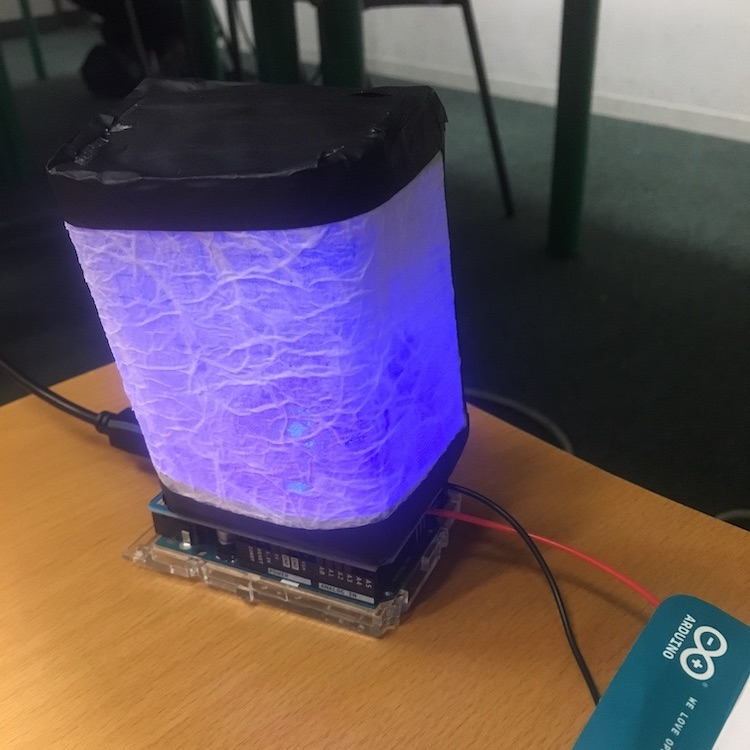

授業の目標
インタラクティブな作品制作に必要な電子工作技術を習得し、新たな表現内容、問題解決手段を提案する。

-
Arduino等を用いてセンサ・アクチュエータを制御する。
-
各種ツールを組み合わせてインタラクティブな作品を制作する。
-
制作した作品についてプレゼンテーションをする。
評価方法
以下の３つを総合的に考慮し、成績を評価。

-
出席（授業態度等を含む）
-
授業外課題
-
作品制作（最終発表でのプレゼンを含む）
評価方法
作品の評価項目は、①完成度、②技術性、③コンセプト。

-
外観、見た目など（電子回路などが丸見えになっていないか）
-
高度なセンサ・アクチュエータ制御、プログラミングの工夫
-
作品を通して何を伝えようとしているのか（アート的思考）
-
作品を通して何を解決しようとしているのか（デザイン的思考）
評価方法
はじめから素晴らしい作品が作れる人なんていません。

-
アイデアは途中で変わったりします。
-
初めからあれこれ考えすぎずに、とりあえず作ってみましょう。
-
作ってみることで次の作品アイデアがどんどん浮かんできます。
演習テーマ①
暗くなると点灯するナイトライトを制作。

-
1.
明るさや色を変えてLEDを光らせる。
-
2.
スイッチに反応する普通のライトを作る。
-
3.
明るさを検出する。
-
4.
暗くなったらライトを点灯する。
-
5.
ランプシェードを作る。
演習テーマ①
ナイトライト 過去の作品①
-
 -
 -

演習テーマ②
手で「触れる」行為を音で演出するサウンドアートを制作。

-
1.
触れる行為をセンサで検出する。
-
2.
mp3音源再生モジュールで音を再生する。
-
3.
触れる行為を音と対応づけて作品を完成させる。
演習テーマ②
触れるサウンドアート 過去の作品①
演習テーマ②
触れるサウンドアート 過去の作品②
最終テーマ
身の回りのモノやコトを〇〇な体験に変える。

-
1.
音や光など、授業で学んだ様々なテクノロジーを駆使して日常を変化させる。
-
2.
〇〇には「分かりやすい」「便利」「楽しい」「気持ちいい」「怖い」「癒される」「ドキドキする」など、何を入れても良い。
演習テーマ③
〇〇な体験 過去の作品①
演習テーマ③